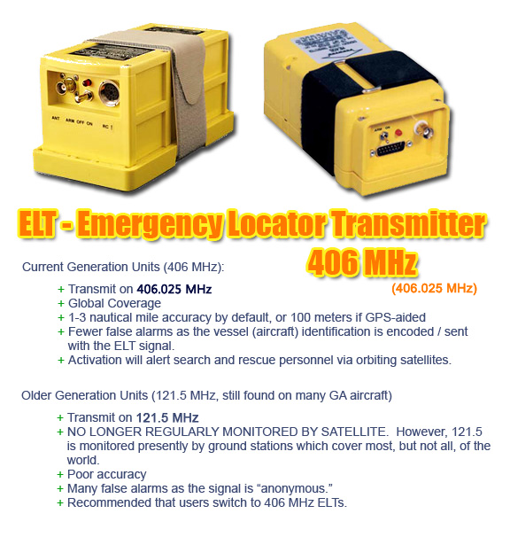
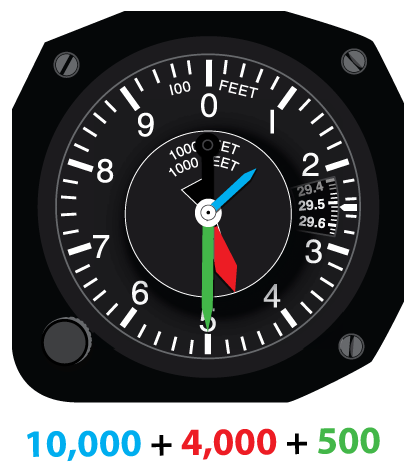
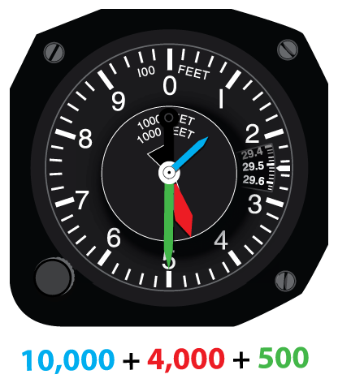

Question ID: PVT682
(www.checkride.com #1909)Which procedure is recommended to ensure that the emergency locator transmitter (ELT) has not been activated? | A. | Ask the airport tower if they are receiving an ELT signal. | | B. | Monitor 121.5 before engine shutdown. | | C. | Turn off the aircraft ELT after landing. |
| Answer B is correct.
An ELT is an Emergency Locator Transmitter. ELTs are designed to automatically activate in the event of a crash and send out a signal that can be heard by SAR (Search and Rescue) personnel.
- Modern ELTs operate on 406 MHz.
These encode your aircraft's identification into the signal they send,
and also encode your exact location if the ELT is coupled to an
appropriate GPS. 406 MHz ELTs are monitored by orbiting satellites (global coverage) which are designed to alert appropriate SAR (search and rescue) personnel.
- Older generation ELTs operate on 121.5 MHz. These do not encode an aircraft
identification and also for other reasons have traditionally had a high
false-alarm rate. While 121.5 MHz are still installed in many GA aircraft, it is recommended that operators switch to current generation ELTs.
In either case, the ELT is generally a brightly colored box (yellow,
red, or orange, typically) mounted in your aircraft. One notable feature
of ELTs is a switch to manually turn on the device in case of, for
example, a forced landing in the wilderness that was not severe enough
to activate the ELT but nevertheless requires search-and-rescue.

This particular question refers most specifically to aircraft which have older 121.5Mhz ELTs.
The Aeronautical Information Manual, paragraph 6-2-5 states:
False Alarms:
1. Caution should be exercised to prevent the inadvertent activation of ELTs in the air or while they are being handled on the ground. Accidental or unauthorized activation will generate an emergency
signal that cannot be distinguished from the real thing, leading to
expensive and frustrating searches. A false ELT signal could also
interfere with genuine emergency transmissions and hinder or prevent the
timely location of crash sites. Frequent false alarms could also result
in complacency and decrease the vigorous reaction that must be attached
to all ELT signals.
2. Numerous cases of inadvertent activation have occurred as a result of aerobatics, hard landings, movement by ground crews and aircraft maintenance. These false alarms can be minimized by monitoring 121.5 MHz and/or 243.0 MHz as follows:
- In flight when a receiver is available.
- Prior to engine shut down at the end of each flight.
- When the ELT is handled during installation or maintenance.
- When maintenance is being performed in the vicinity of the ELT.
- When the aircraft is moved by a ground crew.
- If an ELT signal is heard, turn off the ELT to determine if it
is transmitting. If it has been activated, maintenance might be required
before the unit is returned to the "ARMED" position.
| Emergency Locator Transmitter (ELT) | Return to Explanation | | | Emergency
Locator Transmitter (ELT): A small, self-contained radio transmitter
that will automatically, upon the impact of a crash, transmit an
emergency signal on 121.5, 243.0, or 406.0 MHz. | | Report an issue with this definition | source: FAA Airplane Flying Handbook (FAA-H-8083-3A) |
| | | A
self-contained radio transmitter that automatically begins transmitting
on the emergency frequencies any time it is triggered by a severe
impact parallel to the longitudinal axis of the aircraft. | | Report an issue with this definition | source: FAA Aviation Maintenance Technician Airframe Handbook (FAA-H-8083-31) |
| | | A
radio transmitter attached to the aircraft structure which operates
from its own power source on 121.5 MHz and 243.0 MHz. It aids in
locating downed aircraft by radiating a downward sweeping audio tone,
2-4 times per second. It is designed to function without human action
after an accident. | | Report an issue with this definition | source: FAA Pilot/Controller Glossary |
| | | Emergency
locator transmitter (ELT): A small, self-contained radio transmitter
that will automatically, upon the impact of a crash, transmit an
emergency signal on 121.5, 243.0, or 406.0 MHz. | | Report an issue with this definition | source: FAA Weight Shift Control Handbook (FAA-H-8083-5) |
| |
In
order to aid effective learning, quick look-up definitions such the
above are automatically linked to from certain text presented by our
app. While having such definitions can be very helpful, sometimes
definitions shown might not be contextually correct. We thank you for
your understanding and use of good judgment in such cases. In
order to aid effective learning, quick look-up definitions such the
above are automatically linked to from certain text presented by our
app. While having such definitions can be very helpful, sometimes
definitions shown might not be contextually correct. We thank you for
your understanding and use of good judgment in such cases. | ELT | Return to Explanation | | | Emergency
Locator Transmitter (ELT): A small, self-contained radio transmitter
that will automatically, upon the impact of a crash, transmit an
emergency signal on 121.5, 243.0, or 406.0 MHz. | | Report an issue with this definition | source: FAA Airplane Flying Handbook (FAA-H-8083-3A) |
| | | A
self-contained radio transmitter that automatically begins transmitting
on the emergency frequencies any time it is triggered by a severe
impact parallel to the longitudinal axis of the aircraft. | | Report an issue with this definition | source: FAA Aviation Maintenance Technician Airframe Handbook (FAA-H-8083-31) |
| | | A
radio transmitter attached to the aircraft structure which operates
from its own power source on 121.5 MHz and 243.0 MHz. It aids in
locating downed aircraft by radiating a downward sweeping audio tone,
2-4 times per second. It is designed to function without human action
after an accident. | | Report an issue with this definition | source: FAA Pilot/Controller Glossary |
| | | Emergency
locator transmitter (ELT): A small, self-contained radio transmitter
that will automatically, upon the impact of a crash, transmit an
emergency signal on 121.5, 243.0, or 406.0 MHz. | | Report an issue with this definition | source: FAA Weight Shift Control Handbook (FAA-H-8083-5) |
| |
In
order to aid effective learning, quick look-up definitions such the
above are automatically linked to from certain text presented by our
app. While having such definitions can be very helpful, sometimes
definitions shown might not be contextually correct. We thank you for
your understanding and use of good judgment in such cases. | Emergency Locator Transmitter | Return to Explanation | | | Emergency
Locator Transmitter (ELT): A small, self-contained radio transmitter
that will automatically, upon the impact of a crash, transmit an
emergency signal on 121.5, 243.0, or 406.0 MHz. | | Report an issue with this definition | source: FAA Airplane Flying Handbook (FAA-H-8083-3A) |
| | | A
self-contained radio transmitter that automatically begins transmitting
on the emergency frequencies any time it is triggered by a severe
impact parallel to the longitudinal axis of the aircraft. | | Report an issue with this definition | source: FAA Aviation Maintenance Technician Airframe Handbook (FAA-H-8083-31) |
| | | A
radio transmitter attached to the aircraft structure which operates
from its own power source on 121.5 MHz and 243.0 MHz. It aids in
locating downed aircraft by radiating a downward sweeping audio tone,
2-4 times per second. It is designed to function without human action
after an accident. | | Report an issue with this definition | source: FAA Pilot/Controller Glossary |
| | | Emergency
locator transmitter (ELT): A small, self-contained radio transmitter
that will automatically, upon the impact of a crash, transmit an
emergency signal on 121.5, 243.0, or 406.0 MHz. | | Report an issue with this definition | source: FAA Weight Shift Control Handbook (FAA-H-8083-5) |
| |
In
order to aid effective learning, quick look-up definitions such the
above are automatically linked to from certain text presented by our
app. While having such definitions can be very helpful, sometimes
definitions shown might not be contextually correct. We thank you for
your understanding and use of good judgment in such cases. | SAR | Return to Explanation | | | A
service which seeks missing aircraft and assists those found to be in
need of assistance. It is a cooperative effort using the facilities and
services of available Federal, state and local agencies. The U.S. Coast
Guard is responsible for coordination of search and rescue for the
Maritime Region, and the U.S. Air Force is responsible for search and
rescue for the Inland Region. Information pertinent to search and rescue
should be passed through any air traffic facility or be transmitted
directly to the Rescue Coordination Center by telephone. (See FLIGHT
SERVICE STATION.) (See RESCUE COORDINATION CENTER.) | | Report an issue with this definition | source: FAA Pilot/Controller Glossary |
| |
In
order to aid effective learning, quick look-up definitions such the
above are automatically linked to from certain text presented by our
app. While having such definitions can be very helpful, sometimes
definitions shown might not be contextually correct. We thank you for
your understanding and use of good judgment in such cases. | Search And Rescue | Return to Explanation | | | A
service which seeks missing aircraft and assists those found to be in
need of assistance. It is a cooperative effort using the facilities and
services of available Federal, state and local agencies. The U.S. Coast
Guard is responsible for coordination of search and rescue for the
Maritime Region, and the U.S. Air Force is responsible for search and
rescue for the Inland Region. Information pertinent to search and rescue
should be passed through any air traffic facility or be transmitted
directly to the Rescue Coordination Center by telephone. (See FLIGHT
SERVICE STATION.) (See RESCUE COORDINATION CENTER.) | | Report an issue with this definition | source: FAA Pilot/Controller Glossary |
| |
In
order to aid effective learning, quick look-up definitions such the
above are automatically linked to from certain text presented by our
app. While having such definitions can be very helpful, sometimes
definitions shown might not be contextually correct. We thank you for
your understanding and use of good judgment in such cases. | Operate | Return to Explanation | | | Operate,
with respect to aircraft, means use, cause to use or authorize to use
aircraft, for the purpose (except as provided in §91.13 of this chapter)
of air navigation including the piloting of aircraft, with or without
the right of legal control (as owner, lessee, or otherwise). | | Report an issue with this definition | source: FAA Federal Aviation Regulations (CFR 14 Part 1) |
| |
In
order to aid effective learning, quick look-up definitions such the
above are automatically linked to from certain text presented by our
app. While having such definitions can be very helpful, sometimes
definitions shown might not be contextually correct. We thank you for
your understanding and use of good judgment in such cases. In
order to aid effective learning, quick look-up definitions such the
above are automatically linked to from certain text presented by our
app. While having such definitions can be very helpful, sometimes
definitions shown might not be contextually correct. We thank you for
your understanding and use of good judgment in such cases. | GPS | Return to Explanation | | | A
Global Navigation Satellite System (GNSS) navigation system that can
determine position and track the movement of an aircraft. A global
positioning system (GPS) receiver must be installed on board the
aircraft to receive and interpret signals from the satellite-based
system. | | Report an issue with this definition | source: FAA Advanced Avionics Handbook (FAA-H-8083-6) |
| | | A satellite-based radio positioning, navigation, and time-transfer system. | | Report an issue with this definition | source: FAA Airplane Flying Handbook (FAA-H-8083-3A) |
| | | The
Global Positioning System is a series (or “constellation”) of
satellites circling the Earth, each broadcasting a unique signal. These
signals, usually three or more, are detected by electronic units, and,
thru triangulation and time delay sensings, provide an extremely
accurate location readout of the GPS receiver. Many balloon pilots carry
a small GPS unit on board the balloon to determine location, ground
track and ground speed. | | Report an issue with this definition | source: FAA Balloon Flying Handbook (FAA-H-8083-11) |
| | | A
space-base radio positioning, navigation, and time-transfer system. The
system provides highly accurate position and velocity information, and
precise time, on a continuous global basis, to an unlimited number of
properly equipped users. The system is unaffected by weather, and
provides a worldwide common grid reference system. The GPS concept is
predicated upon accurate and continuous knowledge of the spatial
position of each satellite in the system with respect to time and
distance from a transmitting satellite to the user. The GPS receiver
automatically selects appropriate signals from the satellites in view
and translates these into three-dimensional position, velocity, and
time. System accuracy for civil users is normally 100 meters
horizontally. | | Report an issue with this definition | source: FAA Pilot/Controller Glossary |
| | | Global
Positioning System (GPS): A navigation system that uses satellite
rather than ground-based transmitters for location information. | | Report an issue with this definition | source: FAA Pilot's Handbook of Aeronautical Knowledge (FAA-H-8083-25A) |
| | | Global
positioning system (GPS): Navigation system that uses satellite rather
than ground-based transmitters for location information. | | Report an issue with this definition | source: FAA Risk Management Handbook (FAA-H-8083-2) |
| | | Global
positioning system (GPS): A satellite based radio positioning,
navigation, and time transfer system used for as a reference for
navigation and measures ground speed. | | Report an issue with this definition | source: FAA Weight Shift Control Handbook (FAA-H-8083-5) |
| | | An
acronym for Global Positioning System. A network of satellites which
provide extremely accurate position and time information. Useful in
remote locations or for moving platforms. | | Report an issue with this definition | source: NOAA National Weather Service Glossary |
| |
In
order to aid effective learning, quick look-up definitions such the
above are automatically linked to from certain text presented by our
app. While having such definitions can be very helpful, sometimes
definitions shown might not be contextually correct. We thank you for
your understanding and use of good judgment in such cases. | Alert | Return to Explanation | | | Automated
Local Event Reporting in Real Time. Network of automatic raingauges
that transmit via VHF radio link when precipitation occurs. Some sites
are also equipped with other sensors such as temperature, wind,
pressure, river stage or tide level. | | Report an issue with this definition | source: NOAA National Weather Service Glossary |
| |
In
order to aid effective learning, quick look-up definitions such the
above are automatically linked to from certain text presented by our
app. While having such definitions can be very helpful, sometimes
definitions shown might not be contextually correct. We thank you for
your understanding and use of good judgment in such cases. | Aircraft | Return to Explanation | | | A device that is used or intended to be used for flight in the air. | | Report an issue with this definition | source: FAA Balloon Flying Handbook (FAA-H-8083-11) |
| | | Aircraft means a device that is used or intended to be used for flight in the air. | | Report an issue with this definition | source: FAA Federal Aviation Regulations (CFR 14 Part 1) |
| |
Device(s) that are used or intended to be used for flight in the air,
and when used in air traffic control terminology, may include the flight
crew. Any machine that can derive support in the atmosphere
from the reactions of the air other than the reactions of the air
against the earth's surface. | | Report an issue with this definition | source: FAA Pilot/Controller Glossary |
| | | A device that is used, or intended to be used, for flight. | | Report an issue with this definition | source: FAA Risk Management Handbook (FAA-H-8083-2) |
| | | A device that is used or intended to be used for flight in the air. | | Report an issue with this definition | source: FAA Weight Shift Control Handbook (FAA-H-8083-5) |
| | | A vehicle capable of atmospheric flight due to interaction with the air, such as buoyancy or lift. Note: the plural of "aircraft" is "aircraft", not "aircrafts." - Correct: "One aircraft, Three aircraft"
- Incorrect: "One aircraft, Three aircrafts."
| | Report an issue with this definition | source: Wikitionary / Wikipedia and Related Sources (Edited) |
| |
In
order to aid effective learning, quick look-up definitions such the
above are automatically linked to from certain text presented by our
app. While having such definitions can be very helpful, sometimes
definitions shown might not be contextually correct. We thank you for
your understanding and use of good judgment in such cases. | GA | Return to Explanation | | | General
aviation (GA) is all civil aviation operations other than scheduled air
services and non-scheduled air transport operations for remuneration or
hire. General aviation flights range from gliders and powered
parachutes to corporate jet flights. The majority of the world's air
traffic falls into this category, and most of the world's airports serve
general aviation exclusively. General aviation covers a large range
of activities, both commercial and non-commercial, including flying
clubs, flight training, agricultural aviation, light aircraft
manufacturing and maintenance. | | Report an issue with this definition | source: Wikitionary / Wikipedia and Related Sources (Edited) |
| |
In
order to aid effective learning, quick look-up definitions such the
above are automatically linked to from certain text presented by our
app. While having such definitions can be very helpful, sometimes
definitions shown might not be contextually correct. We thank you for
your understanding and use of good judgment in such cases. | Current | Return to Explanation | | | A general term used for electrical flow. | | Report an issue with this definition | source: FAA Aviation Maintenance Technician Airframe Handbook (FAA-H-8083-31) |
| | | The flow of electrical charge. | | Report an issue with this definition | source: FAA Aviation Maintenance Technician General Handbook (FAA-H-8083-30) |
| | | The horizontal movement of a body of water. | | Report an issue with this definition | source: FAA Seaplane Handbook (FAA-H-8083-23) |
| | | A
horizontal movement of water. Currents may be classified as tidal and
nontidal. Tidal currents are caused by gravitational interactions
between the sun, moon, and earth and are a part of the same general
movement of the sea that is manifested in the vertical rise and fall,
called TIDE. Tidal currents are periodic with a net velocity of zero
over the tidal cycle. Nontidal currents include the permanent currents
in the general circulatory systems of the sea as well as temporary
currents arising from more pronounced meteorological variability. The
SET of a current is the direction toward which it flows; the DRIFT is
its speed. | | Report an issue with this definition | source: NOAA National Weather Service Glossary |
| | - The part of a fluid that moves continuously in a certain direction.
- (electricity) The time rate of flow of electric charge.
- A tendency or a course of events.
| | Report an issue with this definition | source: Wikitionary / Wikipedia and Related Sources (Edited) |
| |
In
order to aid effective learning, quick look-up definitions such the
above are automatically linked to from certain text presented by our
app. While having such definitions can be very helpful, sometimes
definitions shown might not be contextually correct. We thank you for
your understanding and use of good judgment in such cases. | Aeronautical Information Manual | Return to Explanation | | | A reference publication for pilots. | | Report an issue with this definition | source: FAA Balloon Flying Handbook (FAA-H-8083-11) |
| | | Aeronautical
Information Manual (AIM): A primary FAA publication whose purpose is to
instruct airmen about operating in the National Airspace System of the
U.S. It provides basic flight information, ATC Procedures and general
instructional information concerning health, medical facts, factors
affecting flight safety, accident and hazard reporting, and types of
aeronautical charts and their use. | | Report an issue with this definition | source: FAA Pilot/Controller Glossary |
| | | In
United States and Canadian aviation, the Aeronautical Information
Manual (AIM) is the federal regulatory body's official guide to basic
flight information and ATC procedures. Sometimes, the AIM is referred to by the now outdated name "Airman's Information Manual."
This manual contains the fundamentals required in order to fly legally
in the country of origin. It also contains items of interest to pilots
concerning health and medical facts, factors affecting flight safety, a
pilot/controller glossary of terms used in the ATC System, and
information on safety, accident, and hazard reporting. Although the AIM
is not regulatory in nature, parts of it re-state and amplify federal
regulations. In the United States, the AIM is published by the Federal Aviation Administration, and contains ten chapters, as follows: - Air Navigation
- Aeronautical Lighting and Other Airport Visual Aids
- Airspace
- Air Traffic Control
- Air Traffic Procedures
- Emergency Procedures
- Safety of Flight
- Medical Facts for Pilots
- Aeronautical Charts and Related Publications
- Helicopter Operations
The AIM's text and images are produced by the FAA, and are available in electronic form. In Canada, the AIM is published by Transport Canada, and contains the following chapters: - General (GEN)
- Aerodromes (AGA)
- Communications (COM)
- Meteorology (MET)
- Rules of the Air and Air Traffic Services (RAC)
- Facilitation (FAL)
- Search and Rescue (SAR)
- Aeronautical Charts and Publications (MAP)
- Licensing, Registration and Airworthiness (LRA)
- Airmanship (AIR)
New editions of the Transport Canada Aeronautical Information Manual
(TC AIM) are published twice a year, usually in April and October. | | Report an issue with this definition | source: Wikitionary / Wikipedia and Related Sources (Edited) |
| |
In
order to aid effective learning, quick look-up definitions such the
above are automatically linked to from certain text presented by our
app. While having such definitions can be very helpful, sometimes
definitions shown might not be contextually correct. We thank you for
your understanding and use of good judgment in such cases. | Ground | Return to Explanation | | | The
voltage reference point in an aircraft electrical system. Ground has
zero electrical potential. Voltage values, both positive and negative,
are measured from ground. In the United Kingdom, ground is spoken of as
“earth.” | | Report an issue with this definition | source: FAA Aviation Maintenance Technician Airframe Handbook (FAA-H-8083-31) |
| |
In
order to aid effective learning, quick look-up definitions such the
above are automatically linked to from certain text presented by our
app. While having such definitions can be very helpful, sometimes
definitions shown might not be contextually correct. We thank you for
your understanding and use of good judgment in such cases. In
order to aid effective learning, quick look-up definitions such the
above are automatically linked to from certain text presented by our
app. While having such definitions can be very helpful, sometimes
definitions shown might not be contextually correct. We thank you for
your understanding and use of good judgment in such cases. In
order to aid effective learning, quick look-up definitions such the
above are automatically linked to from certain text presented by our
app. While having such definitions can be very helpful, sometimes
definitions shown might not be contextually correct. We thank you for
your understanding and use of good judgment in such cases. | Aerobatics | Return to Explanation | | | Aerobatics
is the practice of flying maneuvers involving aircraft attitudes that
are not used in normal flight. Aerobatics are performed in airplanes and
gliders for training, recreation, entertainment, and sport.
Additionally, some helicopters, such as the MBB Bo 105, are capable of
limited aerobatic maneuvers. An example of a fully aerobatic helicopter,
capable of performing loops and rolls, is the Westland Lynx. The term
is sometimes referred to as acrobatics, especially when translated.
Most aerobatic maneuvers involve rotation of the aircraft about its
longitudinal (roll) axis or lateral (pitch) axis. Other maneuvers, such
as a spin, displace the aircraft about its vertical (yaw) axis.
Maneuvers are often combined to form a complete aerobatic sequence for
entertainment or competition. Aerobatic flying requires a broader set of
piloting skills and exposes the aircraft to greater structural stress
than for normal flight. In some countries, the pilot must wear a
parachute when performing aerobatics. While many pilots fly aerobatics for recreation, some choose to fly in aerobatic competitions, a refereed sport. | | Report an issue with this definition | source: Wikitionary / Wikipedia and Related Sources (Edited) |
| |
In
order to aid effective learning, quick look-up definitions such the
above are automatically linked to from certain text presented by our
app. While having such definitions can be very helpful, sometimes
definitions shown might not be contextually correct. We thank you for
your understanding and use of good judgment in such cases. In
order to aid effective learning, quick look-up definitions such the
above are automatically linked to from certain text presented by our
app. While having such definitions can be very helpful, sometimes
definitions shown might not be contextually correct. We thank you for
your understanding and use of good judgment in such cases. | Maintenance | Return to Explanation | | | This includes inspection, overhaul, repair, preservation, and the replacement of parts, but excludes preventive maintenance. | | Report an issue with this definition | source: FAA Aviation Maintenance Technician General Handbook (FAA-H-8083-30) |
| | | The upkeep of equipment, including preservation, repair, overhaul, and the replacement of parts. | | Report an issue with this definition | source: FAA Balloon Flying Handbook (FAA-H-8083-11) |
| | | Maintenance means inspection, overhaul, repair, preservation, and the replacement of parts, but excludes preventive maintenance. | | Report an issue with this definition | source: FAA Federal Aviation Regulations (CFR 14 Part 1) |
| |
In
order to aid effective learning, quick look-up definitions such the
above are automatically linked to from certain text presented by our
app. While having such definitions can be very helpful, sometimes
definitions shown might not be contextually correct. We thank you for
your understanding and use of good judgment in such cases. In
order to aid effective learning, quick look-up definitions such the
above are automatically linked to from certain text presented by our
app. While having such definitions can be very helpful, sometimes
definitions shown might not be contextually correct. We thank you for
your understanding and use of good judgment in such cases. In
order to aid effective learning, quick look-up definitions such the
above are automatically linked to from certain text presented by our
app. While having such definitions can be very helpful, sometimes
definitions shown might not be contextually correct. We thank you for
your understanding and use of good judgment in such cases. | Airport | Return to Explanation | | | An area of land or water that is used for the landing and takeoff of an aircraft. | | Report an issue with this definition | source: FAA Balloon Flying Handbook (FAA-H-8083-11) |
| | | Airport
means an area of land or water that is used or intended to be used for
the landing and takeoff of aircraft, and includes its buildings and
facilities, if any. | | Report an issue with this definition | source: FAA Federal Aviation Regulations (CFR 14 Part 1) |
| | | An
area on land or water that is used or intended to be used for the
landing and takeoff of aircraft and includes its buildings and
facilities, if any. | | Report an issue with this definition | source: FAA Pilot/Controller Glossary |
| | | An
area of land or water that is used or intended to be used for the
landing and takeoff of aircraft, including its buildings and facilities,
if any. | | Report an issue with this definition | source: FAA Weight Shift Control Handbook (FAA-H-8083-5) |
| |
In
order to aid effective learning, quick look-up definitions such the
above are automatically linked to from certain text presented by our
app. While having such definitions can be very helpful, sometimes
definitions shown might not be contextually correct. We thank you for
your understanding and use of good judgment in such cases. | Tower | Return to Explanation | | | A
terminal facility that uses air/ground communications, visual
signaling, and other devices to provide ATC services to aircraft
operating in the vicinity of an airport or on the movement area.
Authorizes aircraft to land or takeoff at the airport controlled by the
tower or to transit the Class D airspace area regardless of flight plan
or weather conditions (IFR or VFR). A tower may also provide approach
control services (radar or nonradar). (See AIRPORT TRAFFIC CONTROL
SERVICE.) (See APPROACH CONTROL FACILITY.) (See APPROACH CONTROL
SERVICE.) (See MOVEMENT AREA.) (See TOWER EN ROUTE CONTROL SERVICE.)
(See AERODROME CONTROL TOWER.) | | Report an issue with this definition | source: FAA Pilot/Controller Glossary |
| |
In
order to aid effective learning, quick look-up definitions such the
above are automatically linked to from certain text presented by our
app. While having such definitions can be very helpful, sometimes
definitions shown might not be contextually correct. We thank you for
your understanding and use of good judgment in such cases. References Question Classification - FAA Question Code: PVT682
- FAA Learning Statement Code: PLT402 - Recall regulations - ELT requirements
- checkride.com Question ID: 1909
References - AIM 6-2-5
- FAA Learning Statement Code: PLT402 - Recall regulations - ELT requirements
- Study Area: Instrumentation and Avionics
|


 
